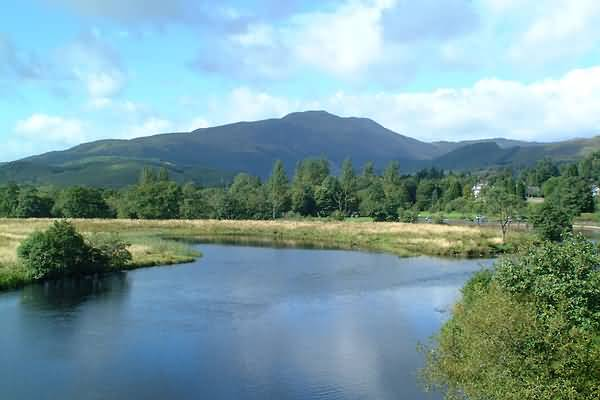
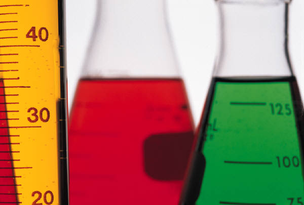

|
Klikk deg
videre til aktuelt fagområde:
BIOLOGI

FYSIKK
KJEMI

|
|
Hva
er naturfag?
Grunnkurset i naturfag dekker tre fagområder,
nemlig biologi, fysikk og kjemi.
I biologi skal du bl.a. lære om celler og virus, DNA, gener og arv,
genteknologi og bioteknologi, om menneskekroppen og om naturen.
I kjemi vil du få vite mer om f.eks. atomer og periodesystemet,
grunnstoffer og kjemiske forbindelser, forskjellige slags bindinger og
reaksjonstyper.
Fysikk handler om energi generelt og elektrisitet, bølger og stråling
spesielt.
Hvorfor lære naturfag?
Først og fremst skal du bli enda bedre kjent
med den naturvitenskapelige metoden, dvs. å gjøre systematiske
observasjoner, forsøke å se sammenhenger mellom observasjonene og
fremstille hypoteser, for deretter å teste ut hypotesene. Prinsippene for
den naturvitenskapelige metoden kan overføres til andre vitenskapsområder.
Videre er det viktig ha en del grunnleggende kunnskaper om
naturvitenskapelige lover, teorier, fenomener og begreper, rett og slett
fordi vi møter dem daglig i hverdagsliv og yrkesliv. Slik allmenndannelse
er en forutsetning for å delta i dagens samfunn og for å være med på
å forme fremtidens samfunn.
Du vil ikke bare få møte naturvitenskapen slik vi kjenner den i dag, du
skal også få et lite innblikk i hva mennesker har tenkt og trodd før.
Ved å kjenne vår historie kan vi bedre forstå hvorfor vi har fått det
samfunnet vi har i dag. |
|